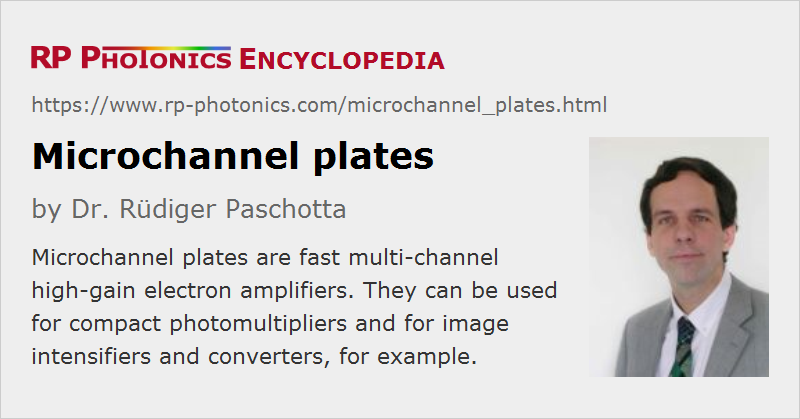

Microchannel Plates
Acronym: MCP
Definition: electron amplifiers with many spatial channels
German: Mikrokanalplatten; Kanalverstärker
Categories: light detection and characterization, optoelectronics
How to cite the article; suggest additional literature
Author: Dr. Rüdiger Paschotta
A microchannel plate (MCP) is essentially a fast high-gain amplifier for electrons, having many parallel spatial channels for use in imaging applications. It is directly sensitive not only to input electrons, but also to other charged particles (e.g. ions or elementary particles) and to electromagnetic radiation with sufficiently short wavelength (high photon energy), i.e., from the ultraviolet to soft X-rays. The detection efficiency (quantum efficiency) generally depends on the type and energy of the particles or the photons. For obtaining sensitivity to visible or infrared light, one can use a photocathode in front of the MCP.
MCPs are used in various photonic instruments, particularly in image intensifiers and image converters. Besides, they are also applied for the detection of X-rays in medical diagnosis or for industrial inspection. Other application areas are time-of-flight mass spectrometry, nuclear physics, other fundamental physics and electron microscopy.
Construction and Operation Principle of Microchannel Plates
A microchannel plate essentially consists of a plate (disk) with a thickness of e.g. 1 mm, which consists of an electrically insulating material (typically glass) and contains a hexagonal array of tiny holes (see Figure 1 a). The front and back face is usually either circular or rectangular. The diameter of the active area can be e.g. 20 mm, 50 mm or even more than 100 mm. The diameter of each channel can e.g. be 10 μm or 20 μm.
MCPs can be fabricated with the following process, for example:
- One assembles many glass fibers to a bundle and fuses them together at a high temperature.
- From that fused bundle, one cuts a slice at some bias angle (see below) against the fiber axes.
- The fibers have a fiber core of a material which can be etched away to obtain the pattern of holes (the channels).
- With a chemical treatment, one generates a thin semiconductor layer on the channel walls. That layer is optimized for a high efficiency of secondary electron emission and for a certain low level of electrical conductivity.
- One evaporates a thin metal film, typically a nickel alloy, onto the end faces to form electrodes. Those electrodes penetrate somewhat into the channels.
An electric voltage of the order of 1 kV is applied to the electrodes during operation.
The whole device must be operated in a high vacuum, e.g. at a residual pressure of 10−4 Pa.
One side of the microchannel plate is hit by electrons, which are generated e.g. in a photocathode 1 mm away from the plate. Typically, one makes the setup such that the electron trajectories have some small bias angle (of the order of 10°) against the axes of the channels.
A single electron sent onto the input side with sufficient energy (e.g. a few hundred electron volts) can generate multiple secondary electrons, which again can hit the inner side of the channel and generate further electrons. After several such cycles, the resulting electron avalanche can generate many thousands of output electrons (see Figure 1 b). This process is similar to that in a conventional photomultiplier, which however would not provide spatial resolution and is also substantially larger.
Each of the many channels can act as an independent electron amplifier. The spatial distribution of output electrons closely resembles that of the input electrons on the other side.
Without any input electrons, there is still some weak strip current due to the non-zero conductivity of the plate material. While a low strip current may be desirable in terms of power consumption, higher values are advantageous for maximum speed of detection (see below).
MCPs are often operated in an analog mode, with the output signal being approximately proportional to the input signal. However, one can also use them in counting mode, where input events are counted while the electric charge per count is not considered: every event with a charge above some threshold is counted.
Key Properties of MCPs
Gain
The amplification factor, also called gain, depends strongly on the length-to-diameter ratio α of the channels and on the operation voltage. These two parameters determine the number of amplification cycles and the multiplication factor per cycle. The cross-over voltage is defined as the operation voltage where unity gain is achieved; normal operation voltage is substantially higher than that. Usual values of α are of the order of 50. For example, a channel diameter of 10 μm then corresponds to a channel length of 0.5 mm.
The gain can be several thousand or even more than 106, but the amplification noise becomes strong for such high gain, mostly because positive ions are accelerated backwards and generate additional input electrons. One therefore often limits the gain (via the voltage) to the order of 104. The responsivity is then still quite high, which is attractive for detecting very faint signals; even photon counting is possible (in conjunction with a photocathode).
Substantially higher gains are possible with multi-stage MCPs, see below.
Note that the resulting sensitivity depends not only on the amplification factor, but also on noise. Ideally, every incident electron would cause an avalanche of the same intensity, but in reality microchannel plates exhibit a non-perfect quantum efficiency (substantially depending on the device design, e.g. on the open area ratio), and there are also substantial fluctuations in the multiplication process.
Strip Current
As explained above, there is a certain strip current flowing through the electrodes even without any input light, which is due to the finite conductivity of the channel walls. That current is detrimental in terms of power consumption and causes some heating of the device (which is normally not effectively cooled due to operation in high vacuum). On the other hand, it sometimes needs to be increased in order to obtain a faster response (see below).
Typically, the whole microchannel plate has a resistance of tens to hundreds of megaohms (MΩ). Strip currents may be as low as 1 μA per cm2 of active area, but can also be dozens of times higher for faster devices.
Dark Current
The dark current is the output current – not to be confused with the strip current – which occurs without any input signal. It is normally very low, e.g. <1 pA/cm2. In counting mode, there is only a very low dark account rate of e.g. a few events per second and cm2 of active area.
Saturation
The gain remains approximately constant as long as the output current stays far below the strip current. For higher output currents (e.g. 5% of the strip current), saturation effects occur, and the range of linear response ends there. For a maximum dynamic range with linear response, one therefore uses microchannel plates with increased strip current, although they have a correspondingly higher power consumption.
The different channels generally saturate independently, as long as the operation voltage does not drop for high output currents. Particularly for counting applications, it can thus be advantageous to use an MCP with many small channels, where the dead time of one channel has less influence.
Spatial Resolution
For highest spatial resolution, it is desirable to make the pitch of the channels as small as possible. Therefore, MCPs with channel pitch values below 10 μm have been developed. For keeping the cane constant, one correspondingly reduces the channel length.
Detection Bandwidth and Dead Time
The detection bandwidth can be very high (many megahertz), as the electrons have quite short and relatively uniform transit times, i.e., a small transit time spread. Typically, the transit times are a few hundred picoseconds, and the transit time spread is well below 100 ps.
After the generation of each electron avalanche, the device has some dead time until the full gain is reached again. This is because the electron avalanche changes the electrical charge distribution in the channel. Particularly for devices with low electrical conductivity (as is desirable in terms of power consumption), the dead time is a limiting factor. Therefore, one may intentionally process the channels for a substantially higher conductivity in order to reduce the dead time.
Lifetime, Operation Temperatures and Shock Sensitivity
The lifetime of a microchannel plate is finite because some degradation occurs during operation. For example, an imperfect vacuum leads to the generation of positive ions, which are accelerated in the channels and can cause damage. Also, there is a gradual resistance change near the output end due to the electron impact. The crucial figure is not the total operation time, but the accumulated electric output charge: aging is substantially faster with signal inputs than without. The rate of aging also depends strongly on design and operation details, e.g. the quality of the vacuum, the operation voltage and some fabrication details.
The operation temperature needs to be kept below 70 °C, for example, in order to avoid a thermal run-away: there is some heating due to the strip current (particularly for the faster devices), and that current rises with increasing temperature, assuming a constant operation voltage.
Although the glass plate of a microchannel plate is mechanically quite robust, MCPs are in practice quite sensitive to mechanical shock. This is essentially because they need to be operated in glass tubes which are sealed for high vacuum. For example, the required high voltage feedthroughs may be damaged by mechanical shock, leading to vacuum leaks. Such a leak can quickly lead to the premature death of an MCP, e.g. by causing an electric gas discharge.
Sensitivity to Magnetic Fields
MCPs are somewhat sensitive to magnetic fields, because those have an influence on the electron trajectories. For fields along the channel directions, the gain can even be increased, while transverse fields tend to reduce the gain. Generally, the sensitivity to magnetic fields is much lower than for traditional photomultipliers. Even operation at field strengths of several teslas is possible.
Combination of Multiple MCPs
For achieving a particularly high again, one often uses a combination of two or three microchannel plates, which are mounted face to face (but generally not with alignment concerning the openings) and are electrically connected in series (without metallic coatings at the interfaces between the plates). Compared with simply using a single microchannel plate with correspondingly longer channels, the performance can be substantially better, essentially because positive ions, traveling backwards, are mostly stopped at the interfaces between the plates. One thus achieve a higher gain without excessive noise.
Devices with two microchannel plates are called dual-stage MCPs or VMCPs, because the channels of the two plates are oriented such that there is some angle between them (V-like chevron shape, see Figure 2). They can achieve a gain of the order of 106. Those with three plates and gains up to about 107 are called three-stage MCPs or ZMCPs or Z-stack MCPs, again with an angle between the channel orientations of subsequent plates.
Because the channels of the different plates are generally not aligned, there is some loss of spatial resolution: at an interface, electrons from one channel can get into more than one channel of the following plate.
Application in an Image Intensifier
In an image intensifier, a photocathode generates photoelectrons, which are pulled towards the microchannel plate with some electrical voltage of e.g. 400 V. Due to the small distance between the photocathode in the input side of the microchannel plate (e.g. 2 mm), one obtains proximity coupling, where each photoelectron is most likely to get into the closest channel. The resulting output electrons of the plate can then be sent to a phosphor screen (with further acceleration, e.g. with several kilovolts), which generates a visible image, e.g. for direct viewing with the eye. Alternatively, one may send the electrons to an electronic sensor.
For more details, see the article on image intensifiers and image converters.
Application in a Microchannel Photomultiplier
In some cases, the spatial resolution is not required. One can construct a compact photomultiplier similar to the image amplifier, with a photocathode in front of a microchannel plate, but simply collecting all output electrons with a single electrode. A moderate voltage of e.g. 100 V is applied between the MCP output and the anode. The whole detector can fit into a quite compact cylindrical housing, e.g. with a diameter and length of a few centimeters. The device typically obtains a single high voltage, which is internally distributed over the three parts with a simple voltage divider (made with resistors). The largest proportion of the voltage is typically reserved for the multichannel plate, and somewhat lower voltages are used for electron acceleration before and after the microchannel plate.
Advantages over conventional photomultipliers are the small size and (if a single-stage MCP is used) also a smaller operation voltage.
It is also possible to use some array of anodes in order to retain some of the spatial resolution. For example, each anode may be 2 mm wide, collecting the outputs of some number of MCP channels.
Instead of independently collecting currents from the anodes, one may connect those with resistors and capacitors and only detect the currents at both ends of that string. One then obtains a kind of position-sensitive detector, which can have a spatial resolution far better than 1 mm.
Suppliers
The RP Photonics Buyer's Guide contains 9 suppliers for microchannel plate detectors.
Questions and Comments from Users
Here you can submit questions and comments. As far as they get accepted by the author, they will appear above this paragraph together with the author’s answer. The author will decide on acceptance based on certain criteria. Essentially, the issue must be of sufficiently broad interest.
Please do not enter personal data here; we would otherwise delete it soon. (See also our privacy declaration.) If you wish to receive personal feedback or consultancy from the author, please contact him e.g. via e-mail.
By submitting the information, you give your consent to the potential publication of your inputs on our website according to our rules. (If you later retract your consent, we will delete those inputs.) As your inputs are first reviewed by the author, they may be published with some delay.
Bibliography
| [1] | J. Wiza, “Microchannel plate detectors”, “Nuclear Instruments and Methods 162 (1-3), 587 (1979)”,“https://www.sciencedirect.com/science/article/abs/pii/0029554X79907341?via%3Dihub”] |
| [2] | G. W. Fraser, “The soft X-ray quantum detection efficiency of microchannel plates”, Nuclear Instrum. and Meth. 195 (3), 523 (1982), doi:10.1016/0029-554X(82)90015-5 |
| [3] | R. C. Taylor et al., “Maximizing the quantum efficiency of microchannel plate detectors: The collection of photoelectrons from the interchannel web using an electric field”, Rev. Sci. Instrum. 54, 171 (1983), doi:10.1063/1.1137365 |
| [4] | S. Matsuura et a l., “Current status of the microchannel plate”, IEEE Transactions on Nuclear Science 31 (1), 399 (1984), doi:10.1109/TNS.1984.4333286 |
| [5] | O. Siegmund, J. Vallerga and A. Tremsin, “Characterizations of microchannel plate quantum efficiency”, Proc. SPIE 5898, UV, X-Ray, and Gamma-Ray Space Instrumentation for Astronomy XIV (2005), doi:10.1117/12.621708 |
See also: photomultipliers, image intensifiers and image converters
and other articles in the categories light detection and characterization, optoelectronics
|  |
If you like this page, please share the link with your friends and colleagues, e.g. via social media:
These sharing buttons are implemented in a privacy-friendly way!